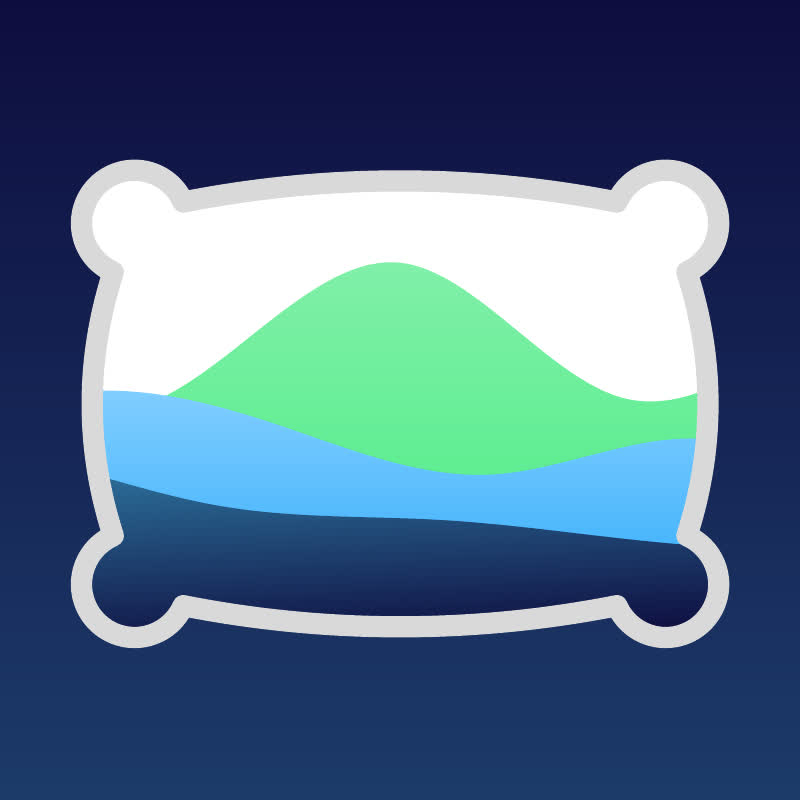
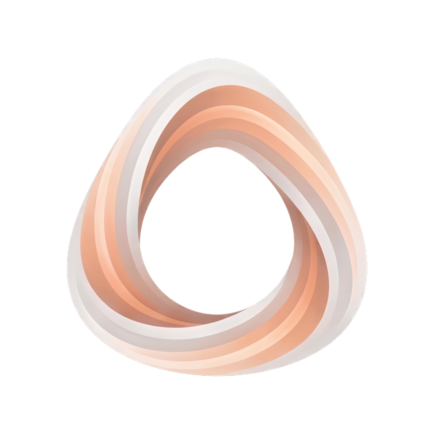
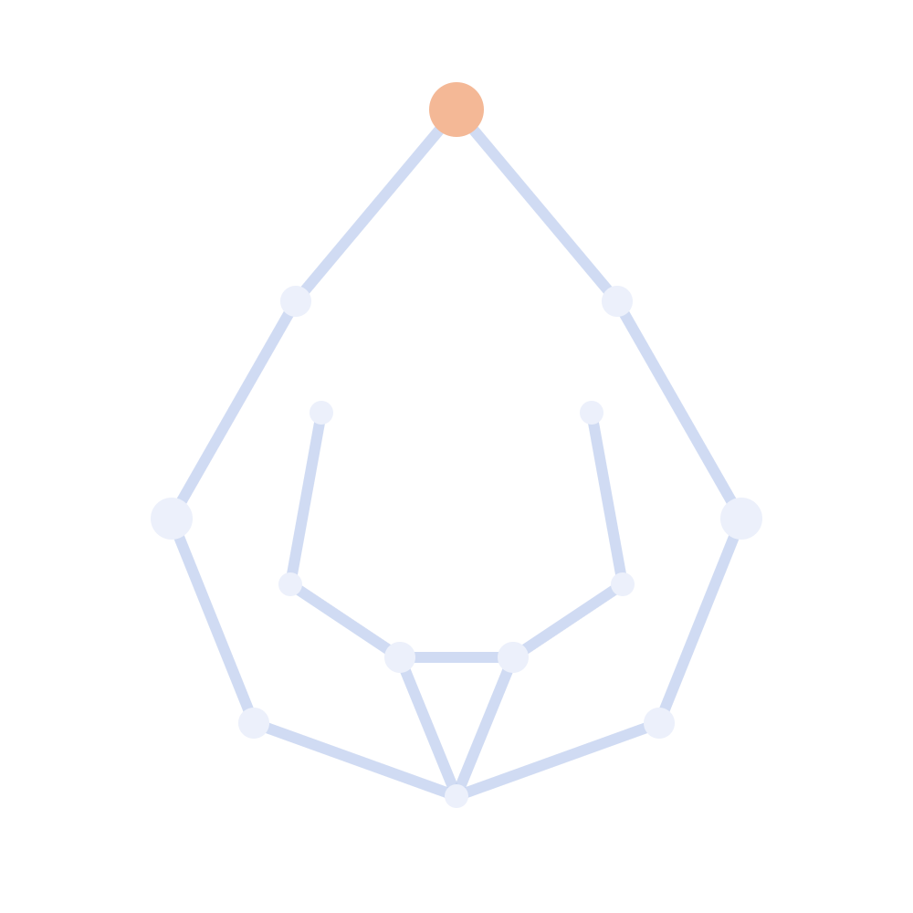
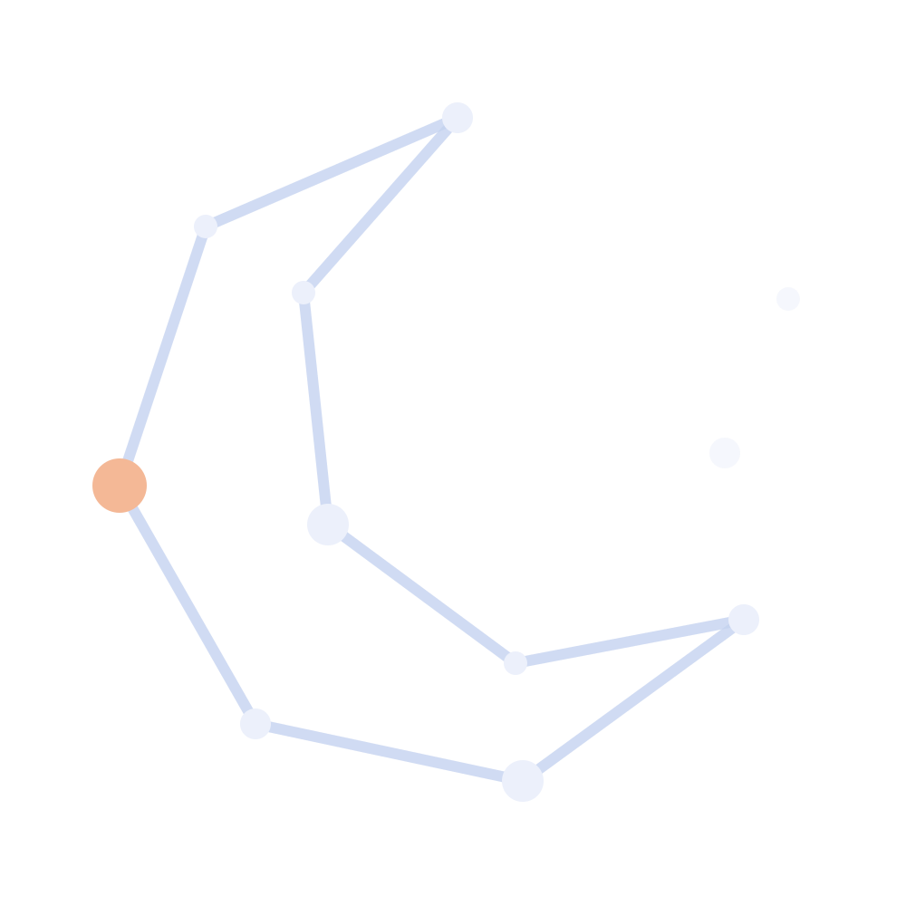
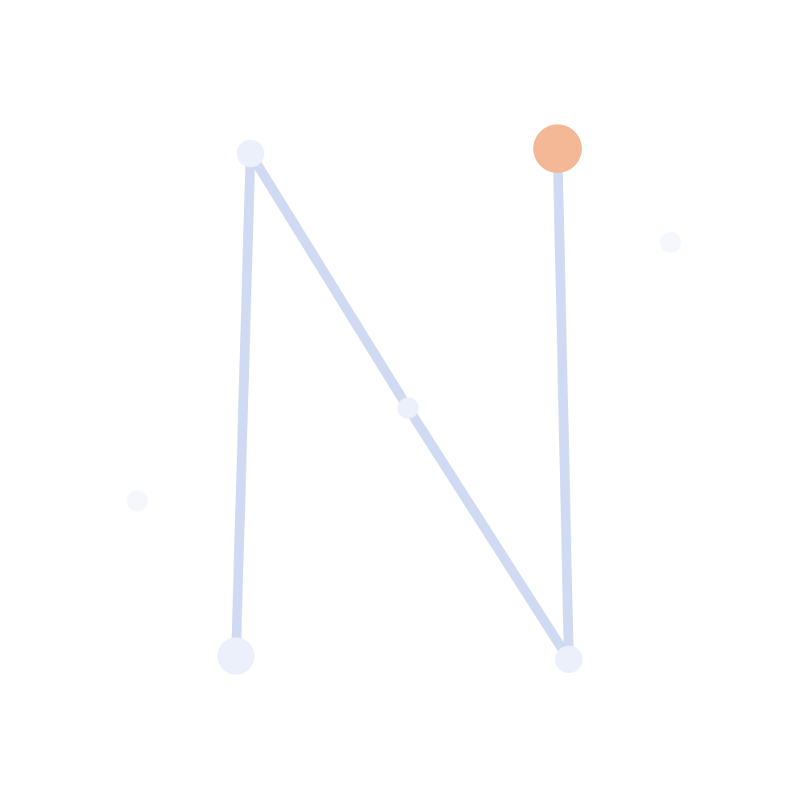
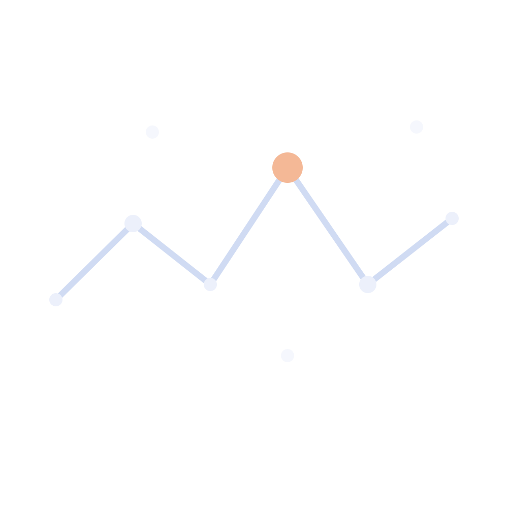
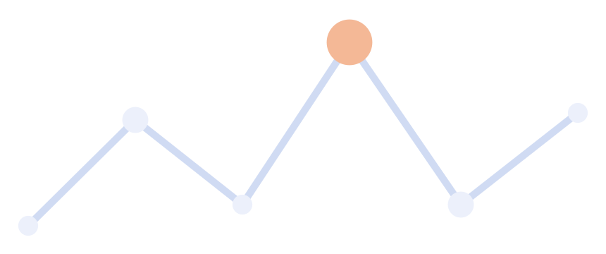
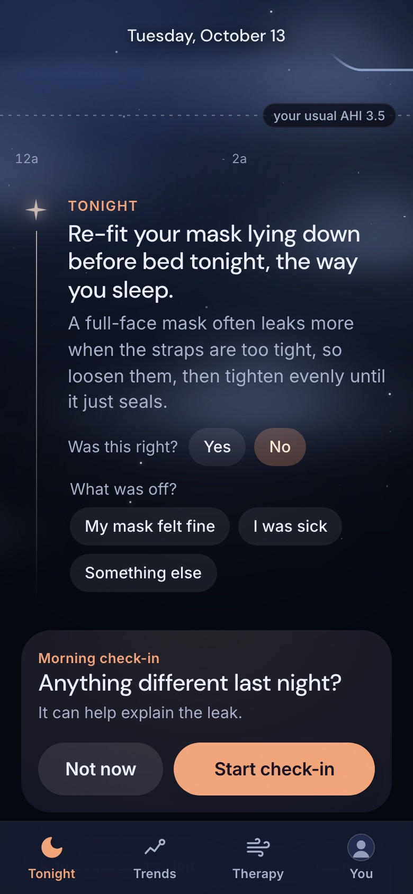

Nocta / AI CPAP Companion
Sleep better,
knowingly.
Nocta reads a CPAP machine's overnight data and writes one honest, plain-language story — what happened, what likely caused it, and the single next thing to try.
01 · The condition
Sleep apnea
Breathing stops and starts through the night, sometimes hundreds of times. Usually the airway collapses (obstructive); less often the brain misses a beat (central).
02 · The treatment
CPAP
A bedside machine pushes steady air through a mask to hold the airway open, and logs every breath to an SD card. Whether the mask fits decides whether people keep wearing it.
03 · The stakes
Compliance
The bar insurers set to keep covering the machine.
01 Desk Research
The pattern is set in the first month.
Sleep apnea affects an estimated 3 to 9% of adults, close to a billion people worldwide. CPAP, the gold-standard treatment, has an adherence problem: a 20-year review found adherence hasn't meaningfully improved, despite better machines and coaching programs.
people affected worldwide
adults have moderate - severe sleep apnea
still met the insurer standard (4+ hours on 70% of nights) two years in
of patients on track in their first month were still on track two years later
Community Research
The same story, hundreds of times.
Beyond the studies, I read through r/CPAP and r/SleepApnea — the human side of those numbers. Post after post described the same struggle: drowning in raw numbers, fighting clunky tools like OSCAR, and just wanting someone to explain what it all means.


Underneath the frustration, the same quiet hope kept surfacing —

User survey · 14 CPAP users
named mask air leaks as one of their biggest challenges
had already changed their mask style or size
rated mask comfort as the #1 thing they'd change
wanted more guidance and better tracking on therapy
User Interviews
Six CPAP users, one recurring wish.
I sat down with six people who actually wear the mask every night — an engineer, a veteran, a self-treating researcher, a designer, a retired lawyer, and a long-haul trucker. Very different lives, strikingly similar frustrations.
Kathy L.
Software Engineer · Portland
Wished out loud for a “CPAP virtual assistant” that gives tips for her specific issues.
ResMed F40 · OSA · myAir + SleepHQ
Cody F.
Veteran & Student
myAir's averaged-out data hides what actually happened overnight.
Memory-foam mask · Moderate OSA · myAir
Susan J.
Self-treating researcher
Self-tunes with OSCAR, Python & ChatGPT — wants longitudinal depth and autonomy.
Full-face mask · UARS · OSCAR
Miles R.
Product Designer · San Francisco
It shouldn't feel so medical — therapy should feel personal.
Nasal pillow · OSA + CSA · MyBreeze + SleepHQ + OSCAR
Robert T.
Lawyer, 66
A comfortable mask is what makes compliance actually stick.
ResMed full-face mask · Severe OSA · myAir
Marcus B.
Long-haul Trucker · Ohio
I need to know I'm passing compliance — my CDL depends on it.
Nasal pillow · OSA · myAir
What I heard, again and again
Mask fit is the real battle
Nearly everyone cycled through many masks (Kathy tried nine) before one stuck — and discomfort is exactly where people quit.
Apps are all-or-nothing
myAir felt too shallow; OSCAR too complex. Everyone wanted the missing middle — real detail, without the overwhelm.
They want a guide, not a dashboard
From “virtual assistant” to ChatGPT consults, users already reach for AI to interpret the data and say what to try next.
It feels clinical — it should feel human
Compliance pressure makes therapy feel like being a medical device. People wanted warmth, autonomy, and encouragement.
02 The Problem
Most people quit CPAP therapy before it can help them.
CPAP apps swing between two failures: they bury patients under raw charts, or they hide the data entirely behind a single green checkmark. Neither builds the confidence and curiosity that keep someone wearing an uncomfortable mask night after night — so most stop within the first month.
“How might we make CPAP data feel actionable and human — so people feel guided, not graded?”
The Solution
Distill each night into one story — what happened, what likely caused it, and the next thing to try — wrapped in calm charts and wearable context.
Competitive Analysis
Powerful but cold — or polished but elsewhere.
I scanned the apps people already use: the CPAP-specific tools built for the data, and the consumer wellness apps built for the habit. The gap between the two — clinical depth with a human voice — is where Nocta lives.
Direct · CPAP & sleep-data tools

ResMed myAir
The official app — one nightly score, little of the “why”.

SleepHQ
Deep CPAP analytics — powerful, but built for power users.

OSCAR
Free desktop software — every data point, zero guidance.
Indirect · Consumer wellness & wearables

Oura
Beautiful readiness scores — but blind to CPAP.

Whoop
Strain & recovery, gorgeously visualized and habit-forming.

Pillow
Friendly iOS sleep tracking — warm, but light on depth.
Iterations
From paper to the right feel.
Back in March 2025, Nocta was my grad-school capstone — researched, designed, and built entirely by hand, no AI in the loop. It started on paper: many rough takes on the nightly story, cheap to draw and cheap to throw away. Each pass after that clarified the hierarchy and warmed the palette, moving from grey wireframes toward a darker, calmer system. In 2026 I took V3 into code and kept designing in the browser. V4 rebuilt the core screens around one card that explains the night; the final iteration adds the night sky, Nox and the why horizon.


03 Brand & Design System
A night sky, not a hospital.
Most CPAP tools look like the machine they came from: grey, clinical, scored in red and green. Nocta's brand starts from the moment people actually open it: half-awake, in the dark, a little worried about a number. The name, the logo, the sky, the coach and the voice all work toward one thing: lowering that worry.
The name
Nocta
nox, noctis · Latin for night
-

01 · 2025 capstone
Pillow
-

02 · Mid 2025
Swirl
-




03 · 2026 exploration
Constellations
-

04 · Early 2026
One breath
-

05 · Current
Nox
Meet Nox
Nocta's coach, there to answer your questions
Palette
- NightThe sky
#090D1A - SurfaceCards & sheets
#141A2E - MetricEvery chart
#7B95D8 - NoxCoach only
#F0A47A - AttentionDoctor-worthy
#E07A6A
Typeface
04 The Result
A more personal way to treat sleep apnea.


01
The why horizon
Instead of a wall of charts, the first thing you see is a verdict and the shape of your night: a few words on what happened, one line with a reference point, and a curve of events per hour against your usual.
Tap the info icon and Nox shows its work: the exact numbers it reasoned from, whether the night fits a pattern it's watching, and how confident it is.
02
The full night, one chart at a time
The detail layer: events by type on the night's real clock, then every signal the machine records, from breathing rate and pressure to leak, flow limitation and snore.
Tap any chart for its own page, like Apple Health: the key number, the graph at full size, and a plain-language “About.”
03
Ask Nox
Nox opens already knowing what you were looking at. From the horizon it starts with last night's numbers and offers three follow-ups; from Trends or a chart, it starts there instead.
Its limits are part of the design. Ask it to change your pressure and it says that's your doctor's call, then offers to prepare a summary for them.
04
Trends over time
Zoom out to 7, 30 or 90 nights. Four tiles (AHI, leak, usage and pressure) double as tabs for one large chart, each with its change right beside the number.
Week-level insights, a best-versus-worst night comparison and journal patterns connect what you logged to how you slept.
05
The same story, on the big screen
From 768 pixels up, the phone's tabs become a dashboard: the night and its strip of a fortnight side by side, every chart a little larger. Same data, same voice, the same one suggestion.
05 From Prototype to Product
From a sample month to your own SD card.
The SD card import
29 nights, read in about five seconds, inside setup.
Works today
- ResMed AirSense 10
- ResMed AirSense 11
In early testing
- Philips DreamStation
- React Health Luna
- Löwenstein prisma
- F&P SleepStyle
- Resvent iBreeze
06 AI Safety
Rules write the insight. Nothing is improvised.
I chose a rule engine over a language model for each night's insight. The same night always gets the same answer, and every sentence traces back to a number.
// L/min — ResMed's large-leak line
const LEAK_LINE = 24;
function leak(row, ctx) {
if (row.leak <= LEAK_LINE) return null;
const leakyNights = ctx.week
.filter((x) => x.leak > LEAK_LINE).length;
const spike = row.leak >= ctx.base.leak * 2;
const chronic = leakyNights >= 4;
if (!spike && !chronic) return null;
return { kind: 'leak', leak: row.leak,
usual: ctx.base.leak, chronic };
}
The loop
Every insight can be answered.
Rules don't learn on their own, so the person teaches them, in one tap and on their terms.
- Was this right? Under each suggestion. A No asks what was off, with reasons that fit the card: “My mask felt fine” under a leak, “I got up on purpose” under a broken night.
- The rule listens. A No rests that rule for this person for two weeks, and a tip that didn't help makes way for the next one. A “talk to your doctor” card never asks: it isn't one to wave off.
- The check-in asks the right question. After an unusual night it leads with the one question that could explain it: “It can help explain the leak.” On ordinary nights it stays a quiet line.
07 Beta Findings
Eleven days live, and the data pushed back.
Nocta opened to the public on October 23, 2026. These are its first eleven days in PostHog, with my own testing left out. The numbers are small, so I read them as signals, not proof. Nobody had written feedback yet, so this is what people did, not what they said.
people opened the app
finished setup
brought in their own SD card
real nights read, in 28 imports
Phones arrive, computers import
Two in three visitors came on a phone, yet all 23 imports happened on a computer: a phone can't open an SD card's folder. So the phone says that plainly, and a sample month lets anyone see a real night before they bring their own.
Cards hold seasons, not a month
I designed around a 30-night sample. The typical card held 71 nights, and the largest held 571, a year and a half of therapy. Trends, the calendar and the import all had to hold that without slowing down.
People don't volunteer feedback
14 people logged a check-in, and “Was this right?” got one answer in its first two days. So the check-in now asks only after an unusual night, with its reason up front, and an answer folds away in a single tap.
Source: PostHog events, Oct 23 – Nov 3, 2026. Local development and my own account excluded.
08 What I Learned
What shipping taught me that the prototype didn't.
The safest AI is predictable
Rules can be read, tested and published. That mattered more than fluent prose.
Real data breaks the happy path
A real card brought 20-minute nights and nights in pieces. Each one needed a calm state.
Voice is a system too
Hedged causes, one action, no diagnosis: enforced in every screen and every Nox answer.
Privacy is part of the design
Session replays mask every number and chart, and shared nights are anonymised.
Try Nocta
Live in beta. Bring your own SD card, or look around with a sample month first.